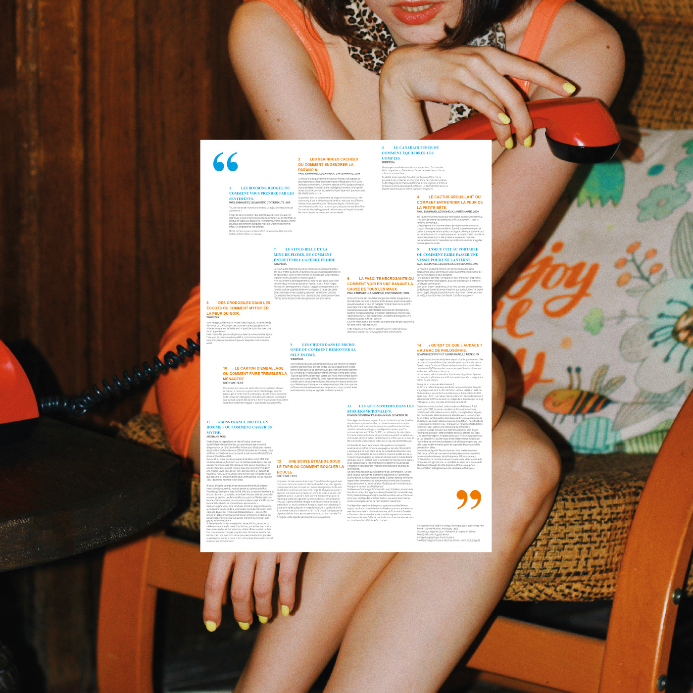
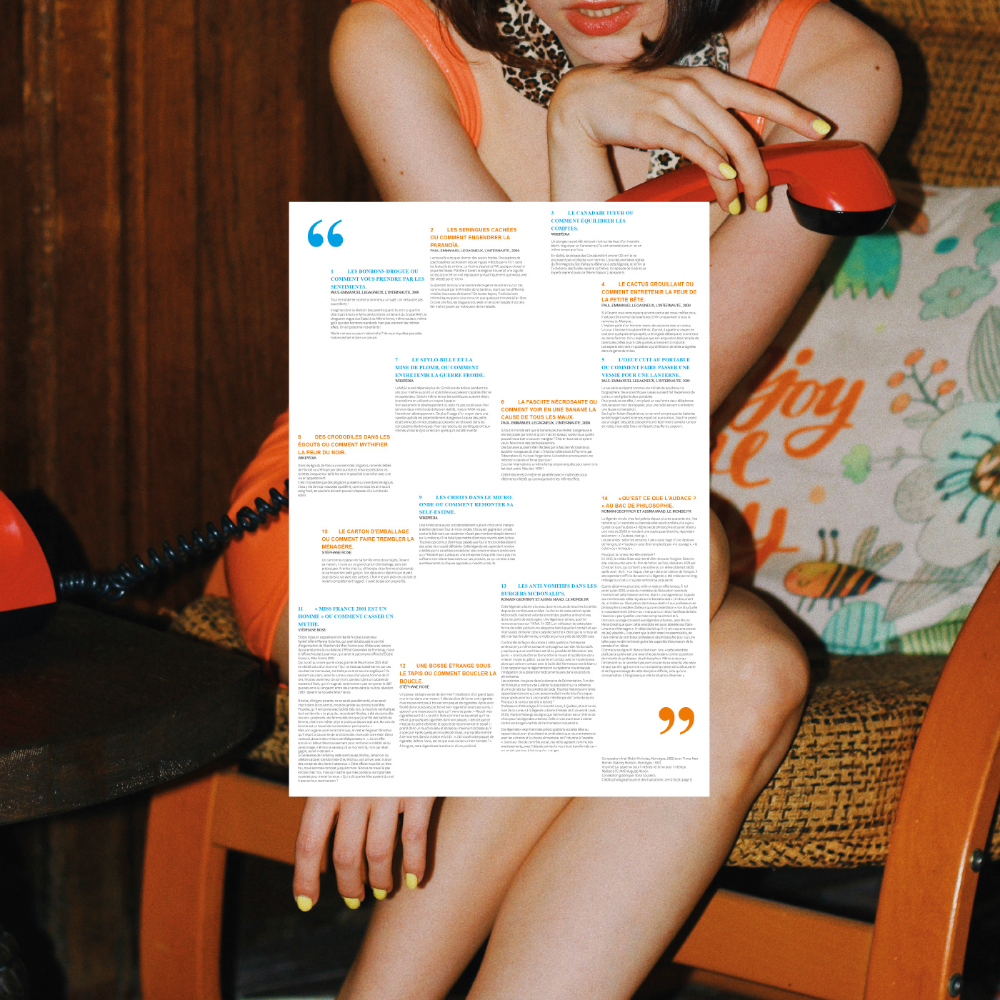

Ce projet consiste en la conception d’une affiche programme sur le thème des Légendes urbaines. Une affiche pliable et réversible qui se compose d’un sommaire, d’extraits d’articles et d’images.
Mon approche s’inspire du concept de bouche à oreille, où l’image et le texte se relaient à travers une composition surprenante. L’utilisation de typographies variées et de couleurs complémentaires créent un dialogue visuel parcourant le format. Ce choix renforce l’idée que chaque légende raconte une histoire unique à assembler.
 
